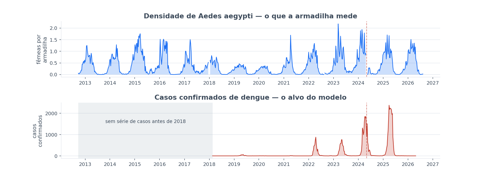
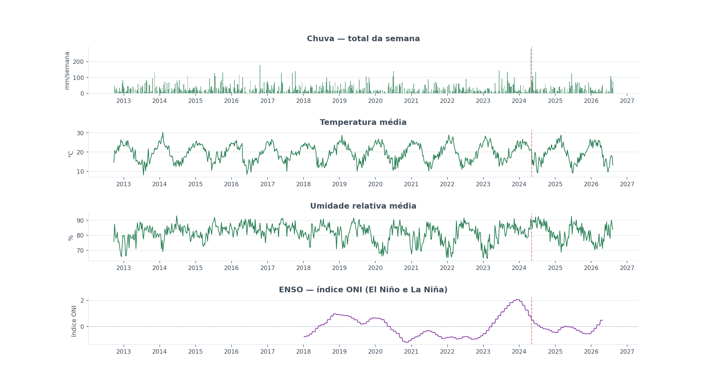
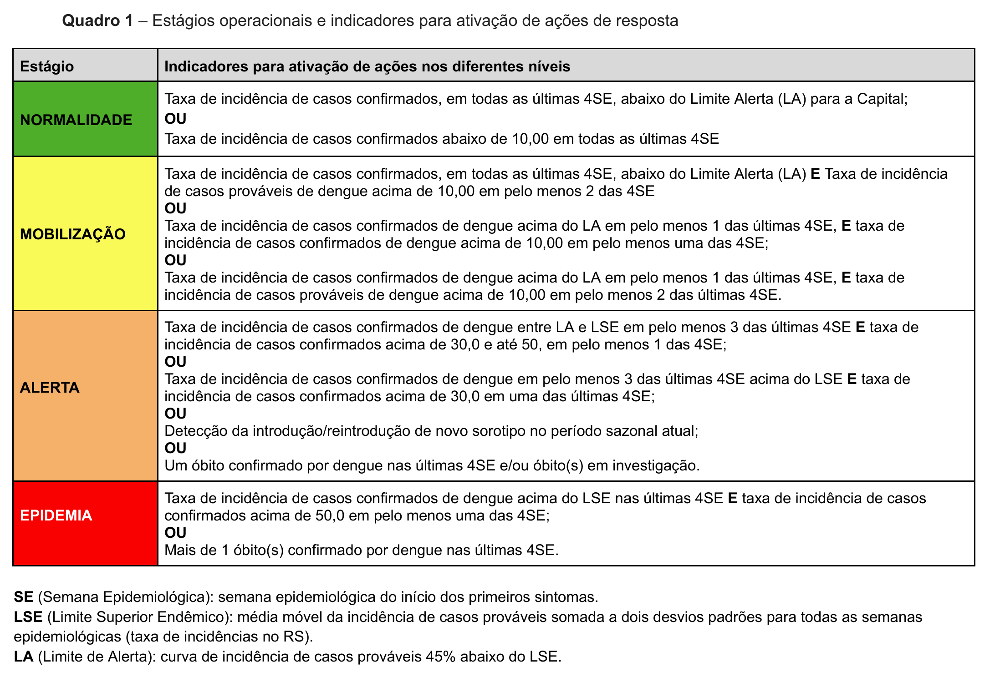
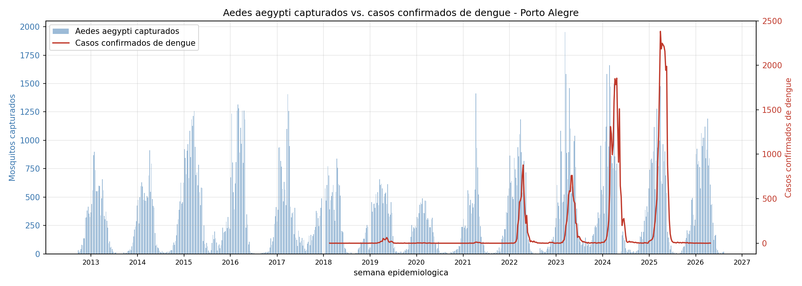

Modelo preditivo de casos de dengue em Porto Alegre
A partir da captura de mosquito das armadilhas municipais, do clima e do histórico de notificação.
Vinicius Guerra · Seminário de Andamento
PPGC — UFRGS · Orientação: Prof. Weverton Cordeiro
Agenda
O percurso desta apresentação
- 1. Objetivo
- 2. Dados
- 3. Cenários
- 4. Resultados
- 5. Próximos passos
Objetivo
Construir um modelo que preveja quantos casos de dengue virão
Captura de mosquito
Clima
Histórico de casos
Previsão
1 semana
1 mês
2 meses
3 meses
Dados
A curva do mosquito e a curva da doença, no mesmo eixo de tempo

Dados
E o clima, que é o que faz o mosquito proliferar

Dados
O clima entra como 22 variáveis, não como uma
| Tema | Colunas geradas |
|---|---|
| Chuva | precip_total_mm precip_max_dia_mm precip_media_dia_mm dias_de_chuva |
| Temperatura | temp_media temp_min temp_max temp_amplitude_media |
| Ponto de orvalho | orvalho_min orvalho_media orvalho_max |
| Umidade | umid_min umid_media umid_max |
| Pressão | pressao_min pressao_media pressao_max |
| Radiação solar | radiacao_min radiacao_media radiacao_max |
| Vento | vento_media vento_max |
Fonte: NASA POWER
Cenários
9 cenários, cada um mudando um parâmetro por vez
| # | Cenário | Alvo | Modelos |
|---|---|---|---|
| 1 | Casos de dengue — sem El Niño | Casos, sem El Niño | LightGBM |
| 2 | Casos de dengue — com El Niño | Casos, com El Niño | LightGBM |
| 3 | Casos de dengue — com corte de maturidade | Casos, com corte de 12 semanas | 9 algoritmos |
| 4 | O ganho do mosquito | Casos, com conjuntos fixos de variáveis | LightGBM |
| 5 | O ganho é real ou é sorte? | A diferença de erro, sob teste estatístico | LightGBM |
| 6 | Comparação com a literatura | Casos e a subida que um artigo prevê | LightGBM |
| 7 | Vai ter surto? — casos confirmados | Surto de casos confirmados | LightGBM |
| 8 | Vai ter surto? — casos notificados | Surto de casos notificados | LightGBM |
| 9 | Mosquito por bairro | Densidade de mosquito por bairro | LightGBM |
Cenários
A configuração de folha mínima 5, e como ela foi escolhida
| Característica | Valor |
|---|---|
| Algoritmo | HistGradientBoostingRegressor (scikit-learn) |
| Função de perda | perda quantílica, quantil 0,85 |
| Hiperparâmetros | max_iter 250 · learning_rate 0,05 · max_leaf_nodes 15 · min_samples_leaf 5 |
| Variáveis | núcleo + clima + variáveis do vetor (mosquito) |
| Alvo | casos de dengue confirmados (SINAN), nível cidade |
| Selecionada por | menor erro de calibração entre 30 configurações (3 algoritmos × 5 perdas × com/sem vetor) |
| Validação | walk-forward: treina só com o que já tinha resposta na data da previsão, prevê de 1 a 12 semanas à frente, avança uma semana e repete |
A previsão não é a média esperada de casos: é um patamar ultrapassado em cerca de 15% das semanas. Enviesado para cima de propósito, porque subestimar um surto custa mais caro do que superestimar.
Cenários
Um único hiperparâmetro troca qual horizonte o modelo acerta
Erro médio, em casos por semana — menor é melhor
| Horizonte | Folha mínima 5 | Folha mínima 20, com vetor |
|---|---|---|
| 1 semana | 98,0 | 133,6 |
| 1 mês | 219,7 | 199,6 |
| 2 meses | 272,6 | 223,2 |
| 3 meses | 278,7 | 243,8 |
E o que o vetor rende dentro da folha 20
| Horizonte | Ganho do vetor na folha 20 | p de Holm |
|---|---|---|
| 1 semana | -15,7% | 0,4654 |
| 1 mês | 4,1% | 0,8295 |
| 2 meses | 8,1% | 0,0056 |
| 3 meses | 12,3% | 0,0151 |
Resultados
O modelo composto, e onde ele ainda perde
| Horizonte | R² (o quanto explica) | Erro médio (casos/semana) | Captura do pico |
|---|---|---|---|
| 1 semana | 0,898 | 98,0 | 88,6% |
| 1 mês | 0,717 | 199,6 | 70,6% |
| 2 meses | 0,576 | 223,2 | 51,0% |
| 3 meses | 0,558 | 243,8 | 50,4% |
Resultados
Do modelo de previsão para um sistema de alerta
daqui a 1 a 3 meses
a cidade vai estar
Resultados
O limiar não é nosso: é o estágio Alerta do plano da Prefeitura

Plano Municipal de Contingência de Arboviroses 2026 · Secretaria Municipal de Saúde de Porto Alegre · Quadro 1, página 15
| Estágio | O plano declara | Em Porto Alegre |
|---|---|---|
| Normalidade | abaixo de 10,0 | 140 casos/semana |
| Mobilização | acima de 10,0 | 140 casos/semana |
| Alerta | acima de 30,0 | 421 casos/semana |
| Epidemia | acima de 50,0 | 702 casos/semana |
Resultados
Como alarme de Alerta, o composto vence a régua até 2 meses
Modelo composto
| Horizonte | Pega quantos Alertas | Precisão | Alarmes falsos por ano |
|---|---|---|---|
| 1 semana | 95,8% | 95,8% | 0,5 |
| 1 mês | 100,0% | 81,8% | 3,1 |
| 2 meses | 85,7% | 100,0% | 0,0 |
| 3 meses | 50,0% | 87,5% | 1,0 |
Régua sazonal
| Horizonte | Pega quantos Alertas | Precisão | Alarmes falsos por ano |
|---|---|---|---|
| 1 semana | 70,8% | 94,4% | 0,5 |
| 1 mês | 74,1% | 95,2% | 0,5 |
| 2 meses | 75,0% | 95,5% | 0,5 |
| 3 meses | 75,0% | 95,5% | 0,5 |
Resultados
Com folha 20, o mosquito reduz o erro em 2 e 3 meses
Folha mínima 5
| Horizonte | Erro médio | Ganho do vetor | p de Holm | Erro sem o mosquito |
|---|---|---|---|---|
| 1 semana | 98 | -6,5% | 1,00 | +20,0% |
| 1 mês | 220 | -0,1% | 1,00 | +62,2% |
| 2 meses | 273 | -7,7% | 1,00 | +52,8% |
| 3 meses | 279 | +2,2% | 1,00 | +38,6% |
Folha mínima 20
| Horizonte | Erro médio | Ganho do vetor | p de Holm | Erro sem o mosquito |
|---|---|---|---|---|
| 1 semana | 134 | -15,7% | 0,47 | +23,6% |
| 1 mês | 200 | +4,2% | 0,83 | +108,3% |
| 2 meses | 223 | +8,1% | 0,0056 | +98,7% |
| 3 meses | 244 | +12,3% | 0,0151 | +51,1% |
Resultados
O modelo não previa o pico porque nunca tinha visto um
2024 — nunca tinha visto epidemia grande · 45 semanas
| Horizonte | R² | Captura do pico | Alarme pega |
|---|---|---|---|
| 1 semana | 0,851 | 76,4% | 9 de 10 · 90,0% |
| 1 mês | 0,629 | 61,0% | 13 de 13 · 100,0% |
| 2 meses | 0,414 | 43,7% | 10 de 14 · 71,4% |
| 3 meses | 0,054 | 24,8% | 1 de 14 · 7,1% |
2025 — com 2024 na história · 52 semanas
| Horizonte | R² | Captura do pico | Alarme pega |
|---|---|---|---|
| 1 semana | 0,916 | 95,8% | 14 de 14 · 100,0% |
| 1 mês | 0,753 | 77,3% | 14 de 14 · 100,0% |
| 2 meses | 0,644 | 56,5% | 14 de 14 · 100,0% |
| 3 meses | 0,792 | 70,0% | 13 de 14 · 92,9% |
Resultados
A previsão do número não serve — o alarme serve
| Calmaria — até 20 casos · 54 semanas (≈ 12 meses) | Alerta — mais de 421 casos · 28 semanas (≈ 6 meses) | |
|---|---|---|
| O intervalo de 90% acerta | 90,7% | 14,3% |
| O intervalo de 50% acerta | 31,5% | 3,6% |
| Erro mediano | 5 casos | 971 sobre 1.428 reais |
| O alarme de surto acertaa mesma previsão, na pergunta binária | nenhum alarme falso | 24 de 28 · 85,7% · precisão 100% |
⚠️ A causa é viés, não variância: o modelo subestima o pico de forma sistemática. Alargar a faixa não conserta, e mudar a escala (raiz, log) piorou em todas as faixas. É a razão de o projeto tratar o modelo como alarme, e não como previsão de número.

Resultados
Ganhamos de quem mediu a mesma cidade, e perdemos para 10 anos de série
Porto Alegre — a comparação justa
| Modelo | R² em 1 mês |
|---|---|
| CatBoost, 27 capitais, 2026 | −0,21 (até 4 semanas) |
| da Silva et al. 2026 | 0,46 (escala log, horizonte não declarado) |
| Modelo composto | 0,72 |
Singapura — 10 anos de série · erro percentual
| Modelo | 1 semana | 3 meses |
|---|---|---|
| LASSO, Shi et al. 2016 | 17% | 24% |
| SARIMA, mesmo artigo | — | 29% |
| Modelo composto | 27% | 58% |
🔴 E não é porque lá tem mais dengue. O pico semanal de Singapura em 2013 foi de 842 casos; o de Porto Alegre em 2025, 2.381. Eles têm mais anos, e anos calmos, que ensinam ao modelo o que é o normal da cidade. Nós temos 4 temporadas.
Resultados
A limitação: o modelo não sabe quem já teve dengue
2026 — 12 casos no ano inteiro · maior semana: 2 casos
| Horizonte | Maior real | Maior previsto | Alarmes do modelo | Alarmes da régua |
|---|---|---|---|---|
| 1 semana | 2 | 64 | 0 de 6 | 0 de 6 |
| 1 mês | 2 | 555 | 3 de 9 | 1 de 9 |
| 2 meses | 2 | 1.808 | 4 de 13 | 5 de 13 |
| 3 meses | 2 | 1.298 | 10 de 17 | 9 de 17 |
O que faltaria para o modelo enxergar isso
| O que acrescentar | O que isso captura | Precisa de |
|---|---|---|
| Casos acumulados nas 2 temporadas anteriores | quanta gente já foi infectada — indicador indireto de imunidade | a própria série de casos |
| Semanas desde o último surto | quanto tempo houve para repor suscetíveis | a própria série de casos |
| Aceleração de transmissão (média de 4 ÷ média de 26 semanas) | subida relativa ao próprio nível, e não nível absoluto | 26 semanas de série |
| Sorotipo circulante | se o vírus em circulação é novo para a população | dado laboratorial que o projeto não tem |
🔴 Em 22/03/2026 o modelo previu 1.808 casos para uma semana que teve zero. Ele aprendeu o calendário e a tendência de alta da série — 5.583 casos em 2022, 24.793 em 2025 — e projetou a continuação. As armadilhas continuaram pegando mosquito; o que mudou não está em nenhuma coluna dele.
Próximos passos
Deslocar a pergunta da consequência para a causa
| Hoje | Próxima etapa | |
|---|---|---|
| Alvo primário | casos de dengue | casos das quatro arboviroses, a partir do vetor |
| Alvo secundário | — | a proliferação do vetor, de clima e captura |
| Horizonte | até 3 meses | até 6 meses |
| Primeira pergunta | o vetor melhora a previsão? | qual é a defasagem entre as duas curvas? |